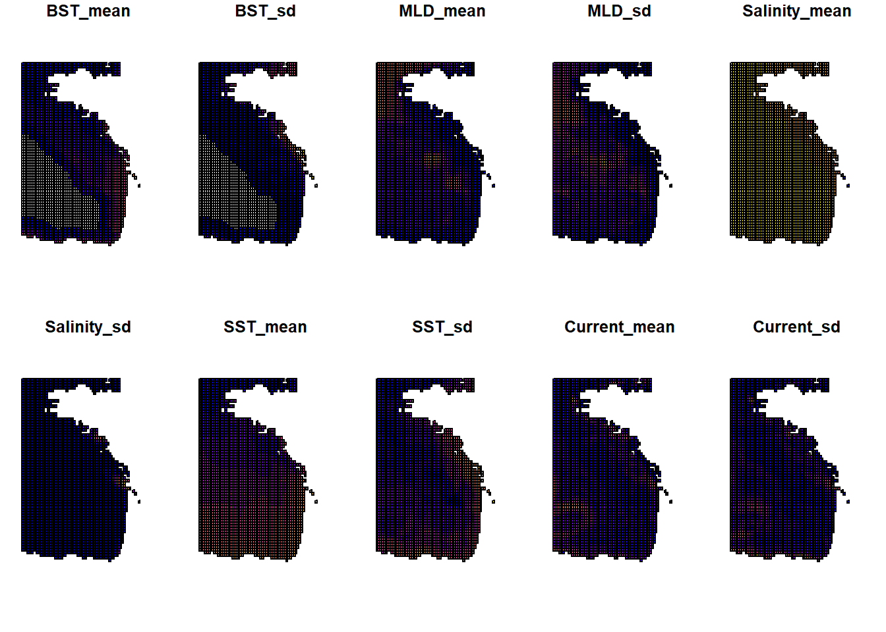
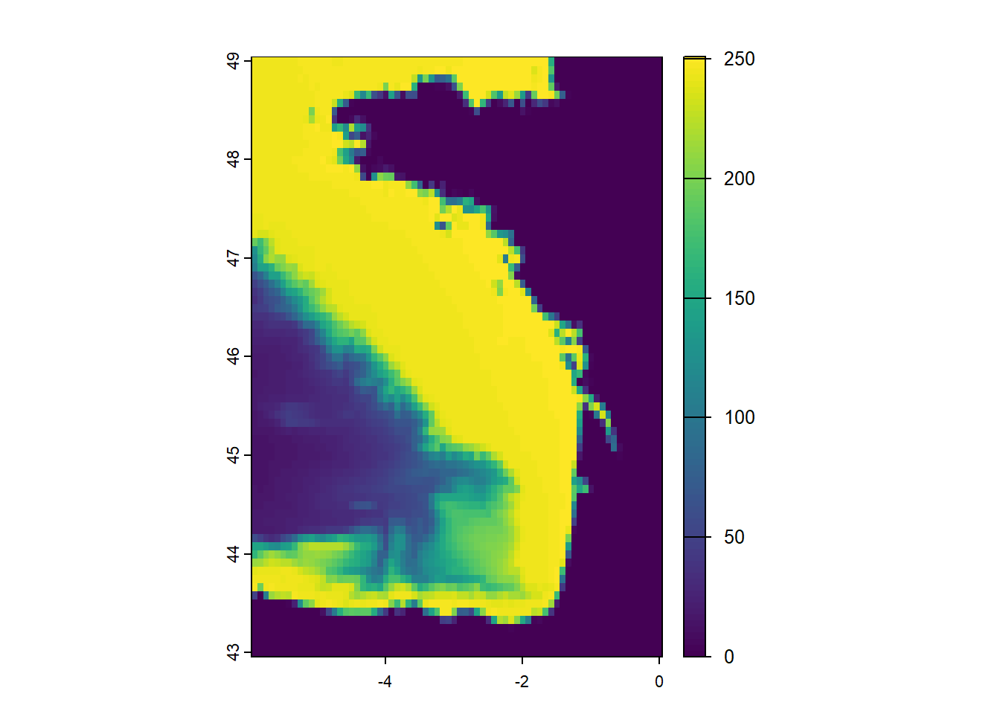
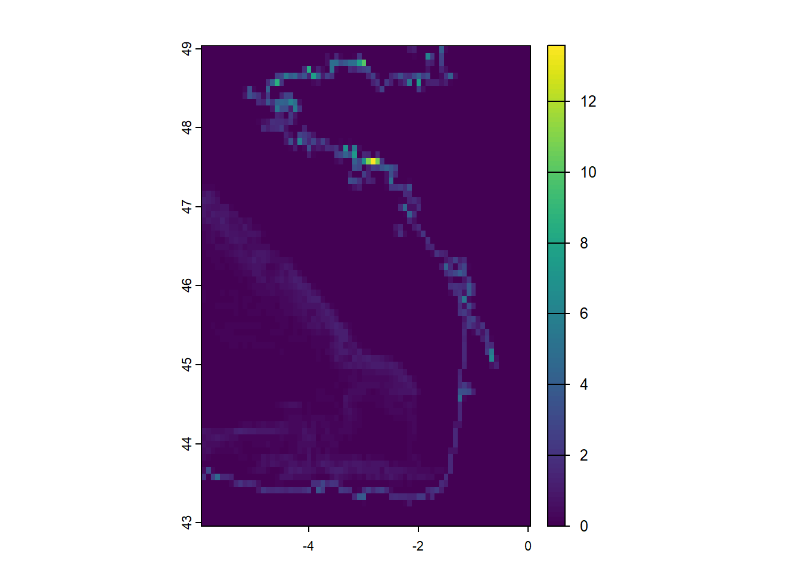
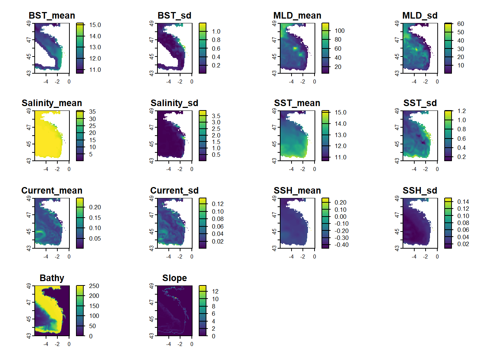

temp_file <- tempdir()Processing climatologies
Introduction
This vignette is presenting a method to create co variable raster from environmental information, in order to add climatologies to effort table. It describes a way to download a .nc file from https://marine.copernicus.eu using Python API. Then the file is transform to generate mean per month and year in rasters.
Initiate
It is needed to create a temporary file to store the climatologies from https://marine.copernicus.eu.
1 - Download climatologies from copernicus
Copernicus Marine makes available a API function to import climatologies from their website.
In order to download with the API, it’ needed to be register online to give a login and a password (can be done on the website : https://data.marine.copernicus.eu/). These information needs to be change in the function “copernicusmarine.login”.
Then, “copernicusmarine.subset” needs to be updated with the different information : id, variables, location, datetime and output directory.
“dataset_id” and “variables” must be taken from the catalog.
import copernicusmarine
# copernicusmarine.login(username= <"LOGIN"> , password= <"PASSWORD">)
copernicusmarine.subset(
dataset_id="cmems_mod_ibi_phy_my_0.083deg-3D_P1D-m",
variables=["bottomT", "mlotst", "so", "thetao", "uo", "vo", "zos"],
minimum_longitude=-6,
maximum_longitude=0,
minimum_latitude=43,
maximum_latitude=49,
start_datetime="2022-04-01T00:00:00",
end_datetime="2023-05-31T00:00:00",
minimum_depth=0.5057600140571594,
maximum_depth=0.5057600140571594,
output_directory= r.temp_file
)
#>
0%| | 0/42 [00:00<?, ?it/s]
2%|2 | 1/42 [00:02<01:37, 2.38s/it]
12%|#1 | 5/42 [00:02<00:14, 2.60it/s]
21%|##1 | 9/42 [00:03<00:07, 4.17it/s]
31%|### | 13/42 [00:06<00:14, 2.04it/s]
36%|###5 | 15/42 [00:06<00:10, 2.58it/s]
40%|#### | 17/42 [00:07<00:12, 2.04it/s]
45%|####5 | 19/42 [00:08<00:09, 2.43it/s]
60%|#####9 | 25/42 [00:08<00:03, 4.33it/s]
64%|######4 | 27/42 [00:10<00:05, 2.84it/s]
74%|#######3 | 31/42 [00:10<00:02, 4.01it/s]
83%|########3 | 35/42 [00:11<00:01, 3.68it/s]
93%|#########2| 39/42 [00:12<00:00, 5.19it/s]
100%|##########| 42/42 [00:12<00:00, 3.46it/s]
#> ResponseSubset(file_path=WindowsPath('C:/Users/gchero/AppData/Local/Temp/RtmpglbMWb/cmems_mod_ibi_phy_my_0.083deg-3D_P1D-m_multi-vars_5.92W-0.00W_43.00N-49.00N_0.51m_2022-04-01-2023-05-31.nc'), output_directory=WindowsPath('C:/Users/gchero/AppData/Local/Temp/RtmpglbMWb'), filename='cmems_mod_ibi_phy_my_0.083deg-3D_P1D-m_multi-vars_5.92W-0.00W_43.00N-49.00N_0.51m_2022-04-01-2023-05-31.nc', file_size=29.924053435114505, data_transfer_size=820.294351145038, variables=['bottomT', 'mlotst', 'so', 'thetao', 'uo', 'vo', 'zos'], coordinates_extent=[GeographicalExtent(minimum=-5.9166669845581055, maximum=-7.599999776175537e-07, unit='degrees_east', coordinate_id='longitude'), GeographicalExtent(minimum=43.0, maximum=49.0, unit='degrees_north', coordinate_id='latitude'), TimeExtent(minimum='2022-04-01T00:00:00+00:00', maximum='2023-05-31T00:00:00+00:00', unit='iso8601', coordinate_id='time'), GeographicalExtent(minimum=0.5057600140571594, maximum=0.5057600140571594, unit='m', coordinate_id='depth')], status='000', message='The request was successful.', file_status='DOWNLOADED')The function import a ‘.nc’ files with all the climatologies downloaded in the area for the complete period.
file_nc <- list.files(temp_file, full.names = TRUE, pattern=".nc")
file_nc
#> [1] "C:\\Users\\gchero\\AppData\\Local\\Temp\\RtmpglbMWb/cmems_mod_ibi_phy_my_0.083deg-3D_P1D-m_multi-vars_5.92W-0.00W_43.00N-49.00N_0.51m_2022-04-01-2023-05-31.nc"2 - Manipulate climatologies
After downloading the complete climatologies, the .nc file must be transform to get rasters per year and month.
Sys.setlocale("LC_TIME", "English")
#> [1] "English_United States.1252"
### A - Open all file names containing ".nc" in the environment ----------------
files <- file_nc[1]
names(nc_open(file_nc[1])$var)
#> [1] "bottomT" "mlotst" "so" "thetao" "uo" "vo" "zos"
# Get all date
# date <- cbind(year(unique(time(rast(files)))), month.name[month(unique(time(rast(files))))]) %>% as.data.frame() %>% dplyr::distinct()
# nc_month <- date[,2]
# nc_year <- date[,1]
# select date for survey
date <- cbind(c("2023", "2023"), c("April", "May" )) %>% as.data.frame()
nc_month <- date[,2]
nc_year <- date[,1]
# Gate names
list_name <- list("bottomT" = "BST",
"so" = "Salinity",
"thetao" = "SST",
"so" = "SSS",
"uo" = "Current",
"chl" = "CHL",
"nppv" = "NPP",
"vo" = NA,
"ue" = "Current",
"ve" = NA,
"mlotst" = "MLD",
"zos" = "SSH")
nc_varname <- names(nc_open(file_nc[1])$var)
nc_varname_associate <- unlist(map(.x = nc_varname, .f = function(x){list_name[[x]]}))
# Add name of variables
vars <- data.frame(
var_long = nc_varname_associate,
var_short = nc_varname) %>% drop_na()
# Loop to extract values -----------------
for(i in 1:dim(date)[1]){
rast_final <- rast()
annee <- date[i,1]
mois <- date[i,2]
for(var_number in 1:length(vars$var_long)) {
var = vars$var_long[var_number]
if(var == "Current"){
u <- rast(files, subds = "uo")
v <- rast(files, subds = "vo")
u <- u[[which(year(time(u)) == annee)]]
v <- v[[which(year(time(v)) == annee)]]
u <- u[[which(months(time(u)) == mois)]]
v <- v[[which(months(time(v)) == mois)]]
rast_current <- sqrt( u^2 + v^2)
## merge and compute mean and sd
mean_var_current <- mean(rast_current, na.rm = T) |> setNames("Current_mean")
sd_var_current <- stdev(rast_current, na.rm = T) |> setNames("Current_sd")
rast_final <- c(rast_final, mean_var_current, sd_var_current, overwrite=TRUE)
} else {
if(var == "EKE"){
u <- rast(files, subds = "ue")
v <- rast(files, subds = "ve")
u <- u[[which(year(time(u)) == annee)]]
v <- v[[which(year(time(v)) == annee)]]
u <- u[[which(months(time(u)) == mois)]]
v <- v[[which(months(time(v)) == mois)]]
rast_eke <-0.5*( u^2 + v^2 )
## merge and compute mean and sd
mean_var_eke <- mean(rast_eke, na.rm = T) |> setNames("EKE_mean")
sd_var_eke <- stdev(rast_eke, na.rm = T) |> setNames("EKE_sd")
rast_final <- c(rast_final, mean_var_eke, sd_var_eke, overwrite=TRUE)
} else {
## open, merge and subset dates
rast_select <- rast(files, subds = vars$var_short[var_number] )
rast_select <- rast_select[[which(year(time(rast_select)) == annee)]]
rast_select <- rast_select[[which(months(time(rast_select)) == mois)]]
## compute mean and sd
mean_select <- mean(rast_select, na.rm = T) |> setNames(paste0(vars$var_long[var_number], "_mean"))
sd_select <- stdev(rast_select, na.rm = T) |> setNames(paste0(vars$var_long[var_number], "_sd"))
## merge
rast_final <- c(rast_final, mean_select, sd_select)
}
}
}
time(rast_final) <- rep(as.Date(paste("01", mois, annee), format = "%d %B %Y") , length(time(rast_final)))
writeRaster(rast_final, paste0(temp_file, "/", annee, "_", mois, '.tif'), overwrite=TRUE)
}
#> Warning: [rast] the first raster was empty and was ignored
#> Warning: [rast] 1 out of 4 elements of x are not a SpatRaster
#> Warning: [rast] the first raster was empty and was ignored
#> Warning: [rast] 1 out of 4 elements of x are not a SpatRaster
rast_final
#> class : SpatRaster
#> size : 73, 72, 12 (nrow, ncol, nlyr)
#> resolution : 0.08333333, 0.08333333 (x, y)
#> extent : -5.958334, 0.0416659, 42.95833, 49.04167 (xmin, xmax, ymin, ymax)
#> coord. ref. : lon/lat WGS 84 (CRS84) (OGC:CRS84)
#> source(s) : memory
#> names : BST_mean, BST_sd, MLD_mean, MLD_sd, Salin~_mean, Salinity_sd, ...
#> min values : 10.92171, 0.006772811, 4.551583, 0.03094085, 0.09632164, 0.0008939617, ...
#> max values : 19.57945, 1.050573744, 72.248358, 32.60082145, 35.82961366, 3.4587316578, ...
#> time (days) : 2023-05-013 - Check output
file_tif <- list.files(temp_file, pattern = '.tif', full.names = TRUE)
file_tif
#> [1] "C:\\Users\\gchero\\AppData\\Local\\Temp\\RtmpglbMWb/2023_April.tif"
#> [2] "C:\\Users\\gchero\\AppData\\Local\\Temp\\RtmpglbMWb/2023_May.tif"
plot(st_as_sf(read_stars(file_tif[1])))
#> Warning: plotting the first 10 out of 12 attributes; use max.plot = 12 to plot
#> all
4 - Bathymetry and Slope
Here we download bathymetrie from Emodnet: https://emodnet.ec.europa.eu/.
## Build final raster stacks - add bathy/slope and resample to same resolution
resample <- function(rast_to_resample, base_raster){
rspl <- stars::st_as_stars(rast_to_resample) %>%
stars::st_warp(., stars::st_as_stars(base_raster), method = "average", use_gdal = T) %>%
as(., Class = "SpatRaster")
return(rspl)
}
# Bathymetrie
path_bathymetry <- system.file(package = "pelascope", "bathymetry.geotif")
raster_bathy <- rast(path_bathymetry)
# Slope
slope <- raster::terrain(raster_bathy,
v = "slope",
neighbors = 8,
unit = "degrees")
#>
|---------|---------|---------|---------|
=========================================
# resample
bathy <- resample(rast_to_resample = raster_bathy$bathymetry,
base_raster = rast_final$BST_mean) %>% setNames("Bathy")
#> Warning in CPL_get_metadata(file, NA_character_, options): GDAL Message 1:
#> bathymetry.geotif: TIFFFetchNormalTag:incorrect count for field "PageNumber",
#> expected 2, got 1
#> Warning in CPL_get_metadata(file, NA_character_, options): GDAL Message 1:
#> TIFFFetchNormalTag:incorrect count for field "PageNumber", expected 2, got 1
#> Warning in CPL_read_gdal(as.character(x), as.character(options),
#> as.character(driver), : GDAL Message 1: bathymetry.geotif:
#> TIFFFetchNormalTag:incorrect count for field "PageNumber", expected 2, got 1
#> Warning in CPL_read_gdal(as.character(x), as.character(options),
#> as.character(driver), : GDAL Message 1: TIFFFetchNormalTag:incorrect count for
#> field "PageNumber", expected 2, got 1
#> Warning in stars::st_warp(., stars::st_as_stars(base_raster), method =
#> "average", : no_data_value not set: missing values will appear as zero values
#> Warning in CPL_gdal_warper(source, destination,
#> as.integer(resampling_method(options)), : GDAL Message 1: bathymetry.geotif:
#> TIFFFetchNormalTag:incorrect count for field "PageNumber", expected 2, got 1
#> Warning in CPL_gdal_warper(source, destination,
#> as.integer(resampling_method(options)), : GDAL Message 1:
#> TIFFFetchNormalTag:incorrect count for field "PageNumber", expected 2, got 1
plot(bathy)
slope <- resample(rast_to_resample = slope$slope,
base_raster = rast_final$BST_mean) %>% setNames("Slope")
#> Warning in stars::st_warp(., stars::st_as_stars(base_raster), method =
#> "average", : no_data_value not set: missing values will appear as zero values
plot(slope)
file_tif <- list.files(temp_file, pattern = '.tif', full.names = TRUE)
save_raster_path <- glue("{temp_file}/clean/")
dir.create(save_raster_path)
file_tif[1:2] %>%
map(.f = function(x){
raster <- rast(x)
time(bathy) <- time(raster$BST_mean)
time(slope) <- time(raster$BST_mean)
raster <- c(raster, bathy, slope)
writeRaster(raster, filename = glue("{temp_file}/clean/{unique(month(time(raster)))}_{unique(year(time(raster)))}.tif"), overwrite = T)
return(plot(raster))
})
#> [[1]]
#> NULL
#>
#> [[2]]
#> NULL5 - Associate Covariate
Now it’s time to associate covariate to effort table.
library(pelascope)
#> Warning: replacing previous import 'Distance::create.bins' by
#> 'mrds::create.bins' when loading 'pelaCDS'
#> Warning: replacing previous import 'magrittr::set_names' by 'purrr::set_names'
#> when loading 'pelascope'
associate_covariate(effort_table = pelascope::data_effort_with_sightings,
raster_folder = save_raster_path)
#> Simple feature collection with 439 features and 232 fields
#> Geometry type: POINT
#> Dimension: XY
#> Bounding box: xmin: -5.657199 ymin: 43.66589 xmax: -1.23514 ymax: 48.31294
#> Geodetic CRS: WGS 84
#> # A tibble: 439 × 233
#> Beaufort TransectID plateform n_obs LegID Start_time
#> * <dbl> <chr> <chr> <dbl> <chr> <dttm>
#> 1 1 TR_Pelgas_04052023 upper_bridge_out… 2 0405… 2023-05-04 11:42:53
#> 2 1 TR_Pelgas_04052023 upper_bridge_out… 2 0405… 2023-05-04 11:42:53
#> 3 1 TR_Pelgas_05052023 upper_bridge_out… 2 0505… 2023-05-05 13:56:44
#> 4 1 TR_Pelgas_05052023 upper_bridge_out… 2 0505… 2023-05-05 13:56:44
#> 5 1 TR_Pelgas_05052023 upper_bridge_out… 2 0505… 2023-05-05 13:56:44
#> 6 1 TR_Pelgas_05052023 upper_bridge_out… 2 0505… 2023-05-05 13:56:44
#> 7 1 TR_Pelgas_18052023 upper_bridge_out… 2 1805… 2023-05-18 13:00:34
#> 8 1 TR_Pelgas_22052023 upper_bridge_out… 2 2205… 2023-05-22 15:03:10
#> 9 1 TR_Pelgas_27052023 upper_bridge_out… 2 2705… 2023-05-27 13:24:10
#> 10 2 TR_Pelgas_01052023 upper_bridge_out… 2 0105… 2023-05-01 06:56:56
#> # ℹ 429 more rows
#> # ℹ 227 more variables: DateTime <dttm>, End_time <dttm>, SegID <chr>,
#> # Effort <dbl>, geometry <POINT [°]>, det.PHACAR <int>, ind.PHACAR <int>,
#> # det.BUOY <int>, ind.BUOY <int>, det.MOTOBO <int>, ind.MOTOBO <int>,
#> # det.LARFUS <int>, ind.LARFUS <int>, det.SULBAS <int>, ind.SULBAS <int>,
#> # det.SAILBO <int>, ind.SAILBO <int>, det.LARGUL <int>, ind.LARGUL <int>,
#> # det.PHAARI <int>, ind.PHAARI <int>, det.LARMAR <int>, ind.LARMAR <int>, …
unlink(temp_file, recursive = TRUE, force = TRUE)
list.files(temp_file)
#> [1] "cmems_mod_ibi_phy_my_0.083deg-3D_P1D-m_multi-vars_5.92W-0.00W_43.00N-49.00N_0.51m_2022-04-01-2023-05-31.nc"
#> [2] "filefa4e26488"
#> [3] "Rffa470f27b8f"